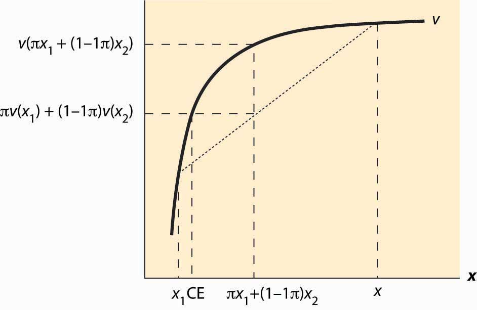

There are many risks in life, even if one doesn’t add to these risks by intentionally buying lottery tickets. Gasoline prices go up and down, the demand for people trained in your major fluctuates, and house prices change. How do people value gambles? The starting point for the investigation is the von Neumann-MorgensternJohn von Neumann (1903–1957) and Oskar Morgenstern (1902–1977) are the authors of Theory of Games and Economic Behavior (Princeton, NJ: Princeton University Press, 1944). utility function. The idea of a von Neumann-Morgenstern utility functionThe value of each outcome, constructed in such a way that a consumer values gambles as if they were the expected utility. for a given person is that, for each possible outcome x, there is a value v(x) assigned by the person, and the average value of v is the value the person assigns to the risky outcome. In other words, the von Neumann-Morgenstern utility function is constructed in such a way that a consumer values gambles as if they were the expected utility
This is a “state-of-the-world” approach, in the sense that each of the outcomes is associated with a state of the world, and the person maximizes the expected value of the various possible states of the world. Value here doesn’t mean a money value, but a psychic value or utility.
To illustrate the assumption, consider equal probabilities of winning $100 and winning $200. The expected outcome of this gamble is $150—the average of $100 and $200. However, the actual value of the outcome could be anything between the value of $100 and the value of $200. The von Neumann-Morgenstern utility is ½v($100) + ½v($200).
The von Neumann-Morgenstern formulation has certain advantages, including the logic that what matters is the average value of the outcome. On the other hand, in many tests, people behave in ways not consistent with the theory.For example, people tend to react more strongly to very unlikely events than is consistent with the theory. Nevertheless, the von Neumann approach is the prevailing model of behavior under risk.
To introduce the theory, we will consider only money outcomes, and mostly the case of two money outcomes. The person has a von Neumann-Morgenstern utility function v of these outcomes. If the possible outcomes are x1, x2, … , xn and these occur with probability π1, π2, … , πn respectively, the consumer’s utility is
This is the meaning of “having a von Neumann-Morgenstern utility function”—that utility can be written in this weighted sum form.
The first insight that flows from this definition is that an individual dislikes risk if v is concave. To see this, note that the definition of concavity posits that v is concave if, for all π in [0, 1] and all values x1 and x2,
For smoothly differentiable functions, concavity is equivalent to a second derivative that is not positive. Using induction, the definition of concavity can be generalized to show
Figure 13.8 Expected utility and certainty equivalents
That is, a consumer with concave value function prefers the average outcome to the random outcome. This is illustrated in Figure 13.8 "Expected utility and certainty equivalents". There are two possible outcomes: x1 and x2. The value x1 occurs with probability π, and x2 with probability 1 – π. This means that the average or expected outcome is πx1 + (1 – π)x2. The value v(πx1 + (1 – π)x2) is the value at the expected outcome πx1 + (1 – π)x2, while πv(x1) + (1 – π)v(x2) is the average of the value of the outcome. As is plainly visible in the figure, concavity makes the average outcome preferable to the random outcome. People with concave von Neumann-Morgenstern utility functions are known as risk-aversePreferring the expected value of a gamble to the gamble. people—they prefer the expected value of a gamble to the gamble itself.
A useful concept is the certainty equivalent of a gamble. The certainty equivalentThe amount of money that provides equal utility to the random payoff of the gamble. is an amount of money that provides equal utility to the random payoff of the gamble. The certainty equivalent is labeled CE in the figure. Note that CE is less than the expected outcome, if the person is risk averse. This is because risk-averse individuals prefer the expected outcome to the risky outcome.
The risk premiumThe difference between the expected payoff and the certainty equivalent. is defined to be the difference between the expected payoff (this is expressed as πx1 + (1 – π)x2 in the figure) and the certainty equivalent. This is the cost of risk—it is the amount of money an individual would be willing to pay to avoid risk. This means as well that the risk premium is the value of insurance. How does the risk premium of a given gamble change when the base wealth is increased? It can be shown that the risk premium falls as wealth increases for any gamble, if and only if is decreasing.
The measure is known as the Arrow-Pratt measure of risk aversionA measure of risk aversion computed as the negative of the ratio of the second derivative of utility divided by the first derivative of utility.The measure was named after its discoverers, Nobel laureate Kenneth Arrow and John Pratt., and also as the measure of absolute risk aversion. It is a measure of risk aversion computed as the negative of the ratio of the second derivative of utility divided by the first derivative of utility. To get an idea about why this measure matters, consider a quadratic approximation to v. Let μ be the expected value, and let δ2 be the expected value of (x – μ)2. Then we can approximate v(CE) two different ways.
Thus,
Canceling v(μ) from both sides and noting that the average value of x is μ, so E(x – μ) = 0, we have
Then, dividing by
That is, the risk premium—the difference between the average outcome and the certainty equivalent—is approximately equal to the Arrow-Pratt measure times half the variance, at least when the variance is small.
The translation of risk into dollars, by way of a risk premium, can be assessed even for large gambles if we are willing to make some technical assumptions. If a utility has constant absolute risk aversion (CARA)Situation in which the measure of risk aversion doesn’t change with wealth., the measure of risk aversion doesn’t change with wealth; that is is a constant. This turns out to imply, after setting the utility of zero to zero, that (This formulation is derived by setting v(0) = 0, handling the case of ρ = 0 with appropriate limits.) Now also assume that the gamble x is normally distributed with mean μ and variance δ2. Then the expected value of v(x) is
It is an immediate result from this formula that the certainty equivalent, with CARA preferences and normal risks, is Hence, the risk premium of a normal distribution for a CARA individual is This formulation will appear when we consider agency theory and the challenges of motivating a risk averse employee when outcomes have a substantial random component.
An important aspect of CARA with normally distributed risks is that the preferences of the consumer are linear in the mean of the gamble and the variance. In fact, given a choice of gambles, the consumer selects the one with the highest value of Such preferences are often called mean variance preferencesPreference that describe people who value risk linearly with the expected return., and they describe people who value risk linearly with the expected return. Such preferences comprise the foundation of modern finance theory.
A consumer has utility u(x) = x7/8 and a base wealth of $100,000. She is about to take part in a gamble that will give her $10,000 (bringing her to $110,000) if a fair die rolls less than 3 (probability 1/3), but will cost her $5,000 (leaving her with $95,000) otherwise.